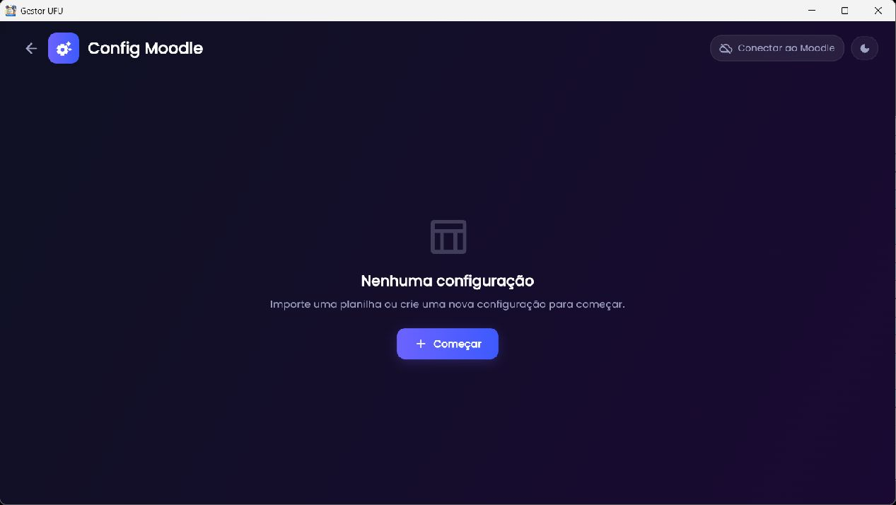
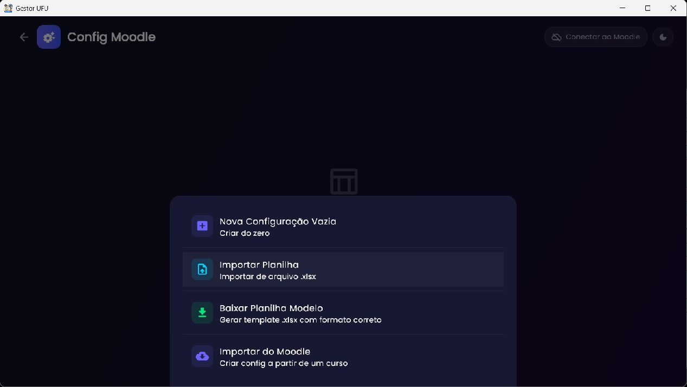
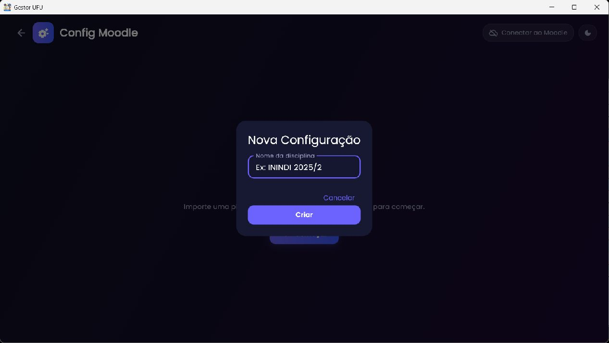
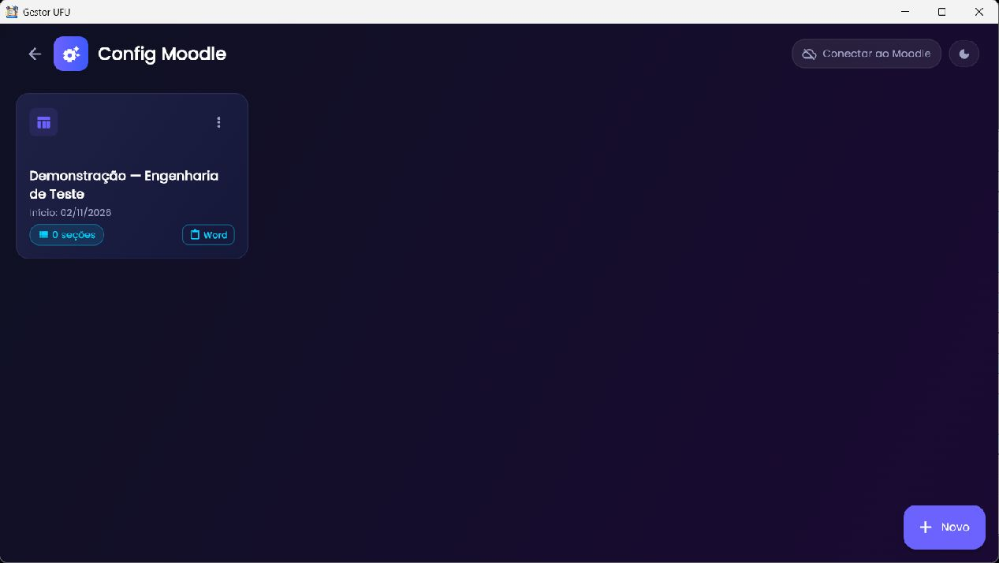
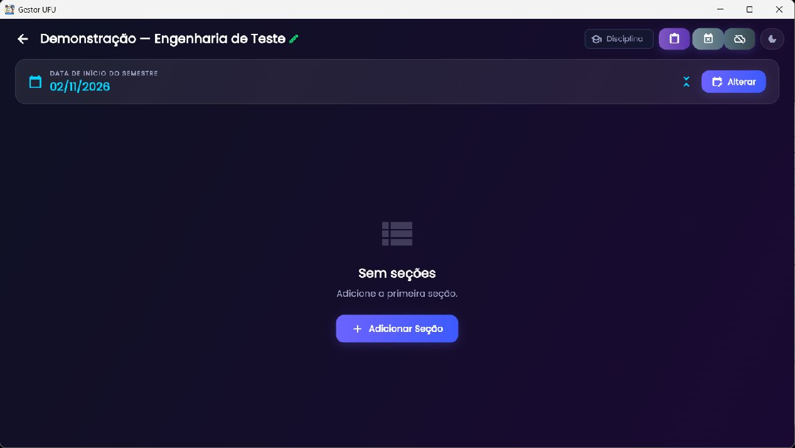
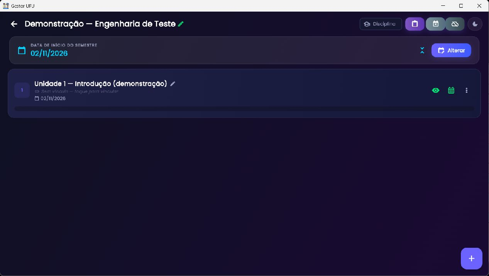
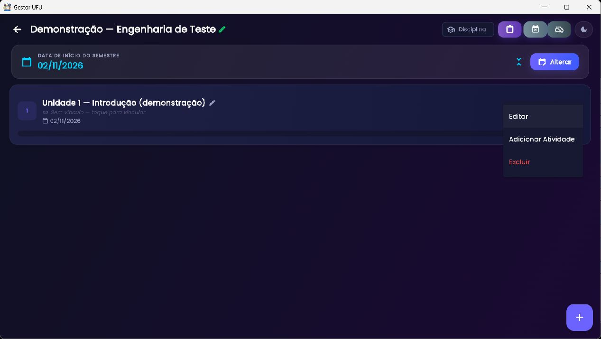
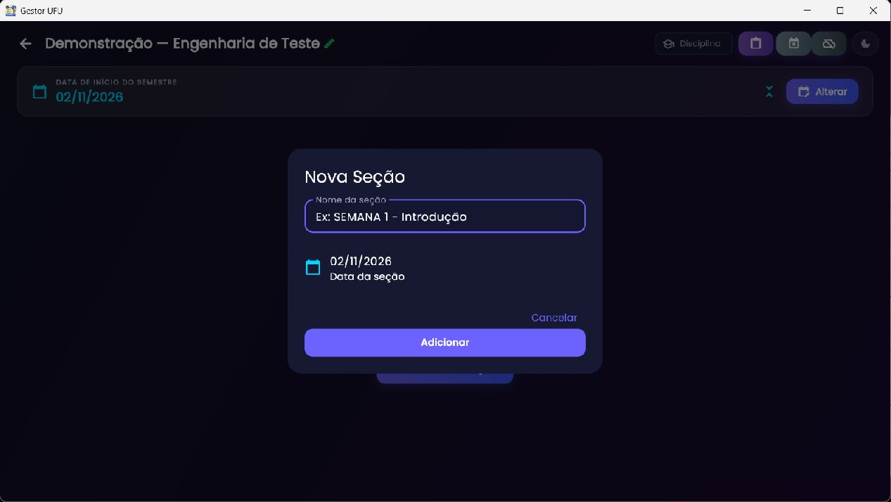
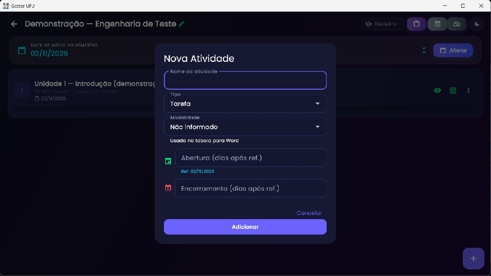
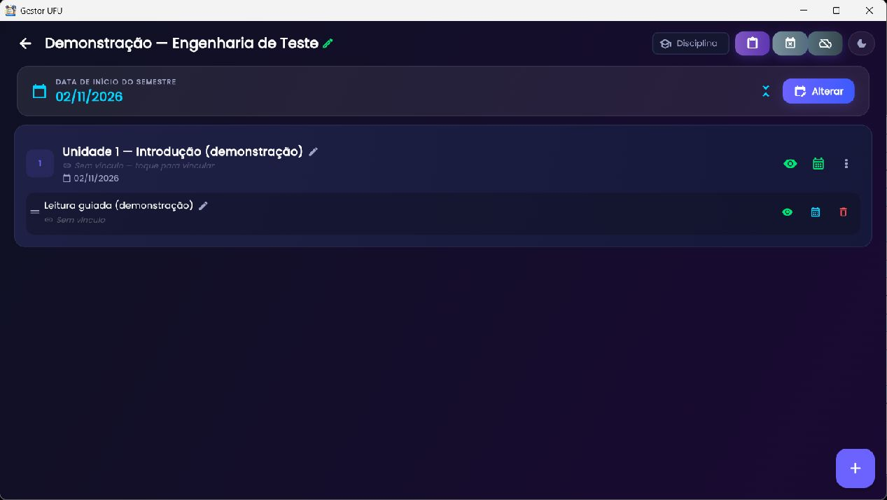

Planejamento de disciplinas
Config Moodle
Organize as seções e atividades previstas para uma disciplina, associe datas e sincronize o resultado com um curso Moodle autenticado.

Criar ou importar uma configuração

- Nova Configuração Vazia: cria uma estrutura manual com nome e início do semestre.
- Importar Planilha: lê arquivo Excel
.xlsxno formato esperado pelo aplicativo. - Baixar Planilha Modelo: gera um template para preenchimento e importação.
- Importar do Moodle: depois do login manual, lista cursos que a conta consegue acessar e constrói a configuração a partir do curso.
Se uma configuração com o mesmo nome já existir, o aplicativo apresenta opções para cancelar, criar outra ou substituir conforme a operação escolhida. Confirme o nome, a disciplina e a data antes de importar. Planilhas fora do modelo podem resultar em linhas ignoradas ou dados incompletos; use o template e revise a prévia.

Cartões, histórico e ações

Abra o cartão para editar a tabela. No menu contextual do cartão, o código oferece sincronização com Moodle, exportação XLSX, exportação da tabela para Word, histórico/versões e exclusão. O histórico permite restaurar cópia de configuração anterior; escolha a versão e revise o conteúdo restaurado.
Editor da tabela


Uma seção representa uma unidade/tópico do curso. Use Adicionar seção para inserir uma seção; informe um nome reconhecível. A seção pode ser expandida/recolhida, ocultada/mostrada, reordenada e removida. A visibilidade é um estado que pode ser sincronizado para o curso. O menu de contexto da seção inclui edição, inclusão de atividade e exclusão.

Cadastrar e editar atividades



Os tipos listados no código incluem tarefa, questionário, pesquisa, escolha, fórum, arquivo, URL, página, pasta, wiki, glossário, lição, H5P, conteúdo interativo, base de dados, diário, presença, conferência web, Jitsi, livro, pacote SCORM e checklist. O conjunto disponível no Moodle remoto pode variar com plugins e permissões.
Informe nome e tipo; selecione modalidade quando aplicável. As datas podem ser definidas como datas de abertura/fechamento ou offsets relativos à data inicial. Confira o fuso horário e datas ao redor de feriados. Atividades podem ser reorganizadas dentro das seções e expandidas/recolhidas em conjunto. Algumas operações são acessadas pelo menu de contexto da atividade.
Datas, feriados e cronogramas
A data inicial da configuração ancora o cronograma. O módulo inclui calendário para escolher datas e uma ferramenta para cadastrar feriados/substituições e rever deslocamentos. Ao aplicar mudança de data em lote, revise a prévia antes de gravar. Se o semestre foi importado com datas deslocadas, altere a data de referência e confira cada prazo resultante.
Login, vínculo e sincronização
Para importar ou sincronizar com um site, use a URL do Moodle e credenciais da conta institucional no diálogo de login. A autenticação ocorre pelo navegador/serviço suportado; não compartilhe senha. Depois, selecione o curso. Na tela de vínculo, associe seções e atividades locais aos elementos do curso Moodle. O seletor de associação filtra por texto.
A tela de prévia de sincronização mostra divergências entre o plano local e o curso. Confirme as alterações somente após revisar o que será criado, alterado, ocultado ou removido. Falta de curso vinculado, sessão expirada, URL errada ou permissão insuficiente impede carregar conteúdo. Faça login novamente, confirme se a conta tem papel autorizado no curso e repita a prévia.
Exportar e recuperar
Use as ações do cartão para exportar XLSX ou Word. A exportação Word é uma representação tabular para revisão; XLSX é útil para cópia e edição em lote. Use histórico para voltar a uma configuração antiga. Antes de excluir ou substituir, exporte uma cópia. A importação do Moodle depende de autenticação e permissões disponíveis para a conta.
Exemplo de fluxo
- Crie uma configuração vazia para a disciplina e indique a data inicial do semestre.
- Cadastre seções na ordem do curso.
- Inclua atividades com nomes e tipos semelhantes aos do curso e configure datas relativas ou fixas.
- Abra o curso Moodle em ambiente de teste e associe cada seção/atividade.
- Revise a prévia, corrija vínculos e datas e só então sincronize.
- Exporte a tabela e mantenha uma versão histórica antes de mudanças grandes.
Relacionado: Preenche Diários pode transformar aulas/cronograma em lançamentos de diário; Planos de Ensino aceita configuração do Config Moodle como fonte de cronograma.